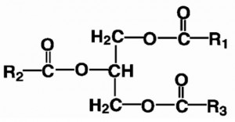

Fett
Tilbake til artikkelserien om næringsstoffene
Fett er det mest energirike av de energigivende makronæringsstoffene, med hele 9kcal per gram. Fett forekommer i mange forskjellige former, men felles for alle disse stoffene er at de er uløselige i vann. Dette medfører at de ikke kan transporteres fritt i blodet, men er avhengig av å fraktes i transportproteiner kalt lipoproteiner eller bundet til andre proteiner. Fett i kostholdet bidrar til opptak av fettløselige vitaminer, siden disse følger fettopptaket.
Fettsyrer er bygget opp av lange kjeder av karbonatomer. Hydrogen bindes til karbonatomene, og i enden finner vi en karboksylsyre-gruppe. Fettsyrene kan være mettet (fylt opp med hydrogenatomer), enumettet (mangler ett hydrogenatom, slik at det oppstår en dobbeltbinding), eller flerumettet (mangler flere hydrogenatomer, og har flere dobbeltbindinger).
Noen fettsyrer regnes som essensielle, noe som betyr at vi må få de gjennom kostholdet. Dette gjelder flerumettede fettsyrer fra omega-3 og omega-6-familiene. Disse gir opphav til noen hormonliknende signalstoffer som heter eikosanoider. Betegnelsene omega-3 og omega-6 viser til hvor langt fra enden vi finner den første dobbeltbindingen, hhv ved karbonatom nr. 3 og nr.6.
Fett i kostholdet vårt utgjøres hovedsakelig av triacylglyseroler (triglyserider), som er lagringsformen for fett. Et triacylglyserol består av tre fettsyrer som er bundet til et glyserolmolekyl. Glyserolmolekylet kan blant annet komme fra nedbrytning av karbohydrater.

Akkurat som med karbohydrater, er det stor uenighet om hvor stor del av kostholdet som bør utgjøres av fett. Er noen typer fett mer gunstig for oss enn andre, og hvor mye trenger vi egentlig av de ulike typene?
Opptak
Vi får hovedsakelig i oss fett i form av triacylglyseroler (TAG), i tillegg til litt fosfolipider fra cellemembraner. For at vi skal kunne ta opp fettet i tarmen, må TAG hydrolyseres til frie fettsyrer og monoacylglycerol (MAG, et glyserolmolekyl med en fettsyre).
Fordøyelsen av fett starter med en gang vi spiser noe som inneholder fett. Fordøyelsesenzymer som er involvert i fettfordøyelsen kalles lipaser, og det finnes flere typer av disse. Lingual lipase fra spyttet og gastrisk lipase fra magesekken begynner å spalte fettsyrene fra glyserolmolekylene, men hovedsakelig skjer fordøyelsen av fettstoffene i tynntarmen.
Når fettstoffene tømmes ut av magesekken, kommer de i kontakt med to sentrale fordøyelsesenzymer fra bukspyttkjertelen, pankreatisk lipase og colipase. Disse fortsetter spaltingen av TAG til frie fettsyrer og MAG.
Opptaket til tarmcellene skjer ved passiv diffusjon. Fettsyrene har en vannløselig og en fettløselig ende, og derfor må det dannes små dråper, såkalte miceller. I en slik micelle er de vannløselige endene orientert inn mot midten, slik at hele forbindelsen blir mest mulig fettløselig. For å danne slike miceller, trengs det gallesalter, som bidrar til å danne og stabilisere disse.
Noen korte, frie fettsyrer bindes til albumin og fraktes direkte til leveren via portåren, men hovedsakelig fraktes fettstoffer pakket inn i lipoproteiner. Inne i tarmcellene gjendannes TAG, som sammen med kolesterol og fettløselige vitaminer pakkes i et lipoprotein som kalles kylomikron.
Kylomikronene fraktes også til leveren, men hovedsakelig gjennom lymfeårene. På veien avleveres fettstoffer til målcellene, og når det kommer til leveren sitter vi igjen med det som kalles en kylomikron-rest. I leveren produseres et lipoprotein som heter VLDL (Very Low Density Lipoprotein), som frakter fett, kolesterol og fettløselige vitaminer ut i kroppen.
Målceller har et enzym på overflaten som heter lipoprotein lipase (LPL). Dette enzymet hydrolyserer TAG slik at de frie fettsyrene kan tas opp i cellen. Aktiviteten av LPL avgjør hvor mye fett målcellen kan ta opp. Ulik LPL-aktivitet i forskjellige vev gjør at vi ikke lagrer fett i like mengder på alle steder i kroppen.
Metabolismen av fett er utdypet i egne artikler tilhørende artikkelserien om metabolismen:
Lipoproteiner
Fett kan ikke transporteres fritt i blodet, og må derfor pakkes inn i lipoproteiner som frakter fettet rundt i kroppen. Inni lipoproteinene finner vi varierende mengder av TAG, fosfolipider, kolesterol og fettløselige vitaminer. Utenpå de ulike lipoproteinene finner vi noen proteiner som heter apoproteiner. De ulike lipoproteiene har forskjellige apoproteiner, noe som er viktig for at de skal kunne frakte fettstoffene til riktig sted, og dessuten er det en markør for hvor mange lipoproteinpartikler vi har av de ulike typene, noe som sier noe om sykdomsrisiko. Vi kan se på de ulike lipoproteinene som busser, mens apoproteinene er sjåfører (kred: Espen Rostrup).
Her er en liten oversikt over de ulike lipoproteinene:
Kylomikron: Produseres i tarmcellene, og leverer triglyserider til fettvev og muskulatur.
VLDL: Dannes i leveren, og leverer triglyserider til organer, muskulatur og fettvev
LDL: Når VLDL har levert fra seg mesteparten av triglyseridene, blir det til et LDL-molekyl. LDL forsyner cellene med kolesterol.
HDL: Produseres i leveren og tarmen, og frakter overflødig kolesterol fra cellene og tilbake til leveren, i det som kalles revers kolesteroltransport.
Kolesterol
Kolesterol er et fettstoff med mange viktige funksjoner i kroppen vår. Kolesterol inngår i alle cellemembraner, og bidrar til å gjøre dem mer stabile. Kolesterol er også en forløper for steroidhormoner, D-vitamin og gallesalter.
Når man måler kolesterolet i blodet, er det flere ulike tester som kan gjøres. Totalkolesterolet er summen av alt kolesterolet i blodet, uansett hvilke lipoproteiner de fraktes i. Lenge har det vært en oppfatning at totalkolesterolet bør være under 5, men nyere kunnskap har vist oss at totalkolesterolet ikke er noen god markør for sykdomsrisiko. Fordelingen av de ulike blodfettstoffene er viktigere enn den totale mengden.
Ved å måle mengden LDL-kolesterol (det «dårlige») og HDL-kolesterol (det «gode»), får vi informasjon som kan gi et bedre bilde av sykdomsrisikoen, men det viser seg nå at LDL-partiklene forekommer i ulike størrelser, der de minste er de farligste. Den totale mengden LDL-kolesterol sier ingenting om hvor store disse partiklene er.
Ved å måle antallet apo-proteiner, kan vi få et bilde av hvor mange partikler vi har, og kombinert med den totale mengden kan vi si noe om størrelsen. Det er identifisert to typiske mønstre av bloddfettfordelingen:
Mønster A: Høy HDL, lave triglyserider og store LDL-partikler.
Mønster B: Lav HDL, høye triglyserider og små LDL-partikler.
Den beste prediktoren for sykdomsrisiko etter denne standarden er den såkalte apo-kvoten, som gir et godt bilde av fordelingen av de ulike lipoproteinene, samt størrelsen på LDL. Den nest beste prediktoren blir å se på mengden HDL og triglyserider, og deretter identifisere om man har mønster A eller B.
Funksjoner
Fett har flere viktige funksjoner i kroppen vår. Hver eneste cellemembran er bygget opp av fett, noe som gjør fett til en av våre viktigste byggestener. I tillegg består hjernen vår i stor grad av fettsyrer.
Cellemembranene våre er bygget opp ved at to lag med fosfolipider (to fettsyrerbundet til en fosfatgruppe) binder seg sammen. Det finnes både mettede, enumettede og flerumettede fettsyrer og kolesterol i slike membraner, og forholdet mellom disse bestemmer hvor flytende membranen blir. Jo flere mettede fettsyrer og kolesterolmolekyler, jo stivere blir membranen, mens de flerumettede fettsyrene gjør membranen mer flytende.
Hjernen vår består hovedsakelig av fett. Spesielt mye finner vi av omega-6-fettsyren arakidonsyre (AA) og omega-3-fettsyren dokosaheksaensyre (DHA). Derfor er det spesielt viktig at barn får i seg tilstrekkelig av disse fettsyrene.
Fett er en viktig energikilde, og nesten alle celler i kroppen kan bruke fettsyrer som energi. Oksidering av fettsyrer skjer i mitokondriene, der sluttproduktet er ATP som er kroppens primære energimolekyl. Hjernen kan ikke bruke fettsyrer som energikilde, da disse ikke kan krysse blod-hjerne-barrieren. Røde blodceller inneholder ikke mitokondrier, og kan derfor ikke benytte fettsyrer som energikilde.
Det subkutane fettvevet vårt, underhudsfettet, har ved siden av å være vårt største energilager også en funksjon som isolasjon mot kulde. Det finnes to ulike typer subkutant fettvev, hvitt og brunt. Hvitt fettvev er hovedsakelig et lagringsvev for fettsyrer, mens brunt fettvev kan sees på som en forbrenningsovn som produserer varme. Brunt fettvev inneholder store mengder mitokondrier.
Tidligere ble fettvevt sett på som et passivt vev, som bare fungerte som et lagringsorgan for energi og fettløselige vitaminer. Dette viser seg å være feil, da det er funnet mange signalstoffer som produseres i fettvev. Fettvevet er vårt største endokrine organ, og hormontypene adipokiner og cytokiner produseres her.
To av de mest sentrale adipokinene er:
Leptin – nedregulerer sult og virker proinflammatorisk. Produksjonen øker med økende fettlagre.
Adiponektin – antiinnflammatorisk effekt, samt øker insulinsensitiviteten. Produksjonen økes med synkende fettlagre.
To av de mest sentrale cytokinene er:
IL-6 – stimulerer akuttfaseproteiner som CRP, som er en inflammasjonsmarkør
TNF-α – påvirker insulinsensitiviteten
Eikosanoider
De flerumettede fettsyrene, omega 3 og 6, gir opphav til noen hormonliknende stoffer som kalles eikosanoider. Disse produseres i små mengder i alle kroppens celler, og er med å regulere de fleste prosessene som skjer i kroppen. Mer om eikosanoider kan du lese her.
Ketonlegemer
Når fettsyrer brytes ned i leveren, produseres det ketonlegemer. Dette er vannløselige molekyler, som kan fraktes i blodet til målcellene og brukes som energi. Disse kan krysse blod-hjerne-barrieren, og gjør at hjernen får tilstrekkelig med energi selv om tilgangen på glukose er lav. Hele 75% av hjernens energibehov kan dekkes av ketoner. Inne i målcellene brukes ketonlegemene substrat til å lage ATP, kroppens primære energimolekyl.
Jo lavere inntaket av karbohydrater i kostholdet er, jo høyere blir produksjonen av ketonlegemer. Når konsentrasjonen av ketonlegemer i blodet blir større enn energibehovet til cellene er, kan ketonlegemene skilles ut i urinen, noe som kan måles.
Dersom inntaket av karbohydrater er lavt nok til at vi kan måle ketonlegemer i urinen, sier vi at vi er i kostindusert ketose. En vanlig misforståelse er å forveksle dette med tilstanden ketoacidose, som kort fortalt er en overproduksjon av ketonlegemer kombinert med høyt blodsukker. Ketoacidose er en tilstand som kan oppstå hos diabetikere, der leveren kan sette igang produksjon av ketonlegemer til tross for at det er mye glukose tilgjengelig (høyt blodsukker).
Behov og anbefalinger
De norske anbefalingene for fettinntak er at fett skal utgjøre 25-35% av vårt daglige energiinntak. Videre sier anbefalingene at 10-15% bør være i form av enumettet fett, 5-10% i form av flerumettet fett og maksimalt 10% fra mettet fett. Transfett bør i følge anbefalingene reduseres til maksimalt 1% av det daglige inntaket.
Det er i dag stor uenighet vedrørende disse rådene. Det er ingen tvil om at mange i dag har opplevd store helseeffekter ved å øke andelen fett i kostholdet til fordel for karbohydrater, spesielt i forbindelse med vektreduksjon.
Omega-3/omega-6, essensielle flerumettede fettsyrer
Det flerumettede fettet i kostholdet vårt består av to fettsyrefamilier som heter omega-3 og omega-6. Disse navnene kommer av hvor i fettsyrene den første dobbeltbindingen er lokalisert, hhv ved karbonatom nr 3 og 6. Disse fettsyrene utgjør de essensielle fettsyrene, da vi ikke er i stand til å lage de selv.
Disse fettsyrene gir som nevnt lenger oppe opphav til eikosanoider, som er hormonliknende signalstoffer. Omega-3 og omega-6 gir opphav til forskjellige eikosanoider, som ofte virker motsatt av hverandre. På grunn av dette er det viktig å oppnå en god balanse mellom disse fettsyrene. Hva som er det optimale forholdet vet vi ikke, men med stor sannsynlighet får de fleste i seg for mye omega-6 med dagens kosthold.
I et vanlig kosthold, får vi i oss langt mer omega-6 enn omega-3, og det er ikke uvanlig at forholdet er fra 1:10 og oppover. Dette er nok hovedgrunnen til at tilskudd av omega-3 har så gode virkninger som det har, siden dette bidrar til å rette opp dette forholdet.
Hovedkildene til omega-6 er oljer (solsikke, soya og mais) og kornbaserte matvarer, mens linfrøolje og sjømat er rik på omega-3.
Mettet fett
Mettet fett har lenge vært sett på som noe vi bør redusere inntaket av, og myndighetene anbefaler at maksimalt 10E% av vårt daglige inntak skal komme fra mettet fett. Disse anbefalingene oppstod på bakgrunn av antakelser om at mettet fett økte risikoen for hjertesykdom, og lenge var dette begrunnelsen i de offentlige anbefalingene.
Nyere studier forteller oss derimot at det ikke er mulig å påvise en sammenheng mellom inntak av mettet fett og forekomsten av hjertesykdom. Dette gjenspeiles også i de nyeste rådene fra myndighetene, der de har gått bort fra dette argumentet. Det anbefales fremdeles å redusere inntaket av mettet fett, men nå er begrunnelsen at energitettheten øker risikoen for overvekt.
Mettet fett er stabile molekyler. Siden alle karbonatomene er fylt opp med hydrogenmolekyler, vil ikke frie radikaler i kroppen kunne gjøre noen skade på disse fettsyrene. Flerumettede fettsyrer derimot, er veldig utsatt for oksidering i kontakt med frie radikaler. Det er ikke tilfeldig at kilder til flerumettet fett også inneholder antioksidanter, som f.eks. E-vitamin.
Mangeltilstander
En mangel på fett handler om utilstrekkelig inntak av de essensielle fettsyrene. Symptomer på at man har fått i seg for lite av disse er tørr hud, veksthemming, unormal synsfunksjon, nedsatt immunforsvar og hemming av hjerneutviklingen hos små barn.
Fett er også viktig for opptak av de fettløselige vitaminene, og lavt inntak kan føre til lavt opptak og evt mangel på disse. Til slutt er fett viktig som energikilde, og det å få i seg for lite energi over lengre tid er ikke bra og vil kunne redusere mange av kroppens funksjoner.
Kan vi få for mye?
Et høyt energiinntak kan over tid føre til vektoppgang, men dette gjelder uansett hvilket næringsstoff energien kommer fra.
Et høyt inntak av flerumettet fett, kan gjøre oss mer utsatt for oksidativt stress. Velger du å følge et høyfettkosthold, bør du fortrinnsvis øke inntaket av mettet og enumettet fett. Likevel viste en samleanalyse nylig at man ved å erstatte noe mettet fett med flerumettetfett, ville redusere risikoen for hjertesydom.
Gode kilder
Fett finner vi både i dyre- og planteriket. Mettet fett finner vi hovedsakelig i kjøtt, meieriprodukter (melk, fløte, rømme, smør, ost) og i kokos- og palmeolje. Enumettet fett finner vi mye av i olivenolje, avocado og nøtter, men også i kjøtt og fisk. Av de flerumettede fettsyrene finner vi mye omega-3 i sjømat, linfrø(olje) og valnøtter. Omega-6 finner vi mye av i kornprodukter, vegetabilske oljer/plantemargariner, nøtter og frø.
Et godt råd når det kommer til å velge fettkilder, er å tenke at fettet skal være minst mulig behandlet. Styr unna prosessert fett som varmebehandlede oljer. Fettet i halvfabrikata er ofte bearbeidet og inneholder mye omega-6 i forhold til omega-3.
Aktuelt om fett
Siden 50-tallet har den vestlige verden vært preget av en fettfrykt. Antakelsen om at det var en sammenheng mellom fett i kostholdet og risikoen for å utvikle hjertesykdom førte til mange år med fokus på å redusere fettinntaket. Denne frykten er nå på vei bort.
I dag er det mer og mer populært å velge et høyfettkosthold. Debatten raser, og noen mener at dette er å gamble med liv og helse. Vitenskapelig finnes det derimot få gode argumenter for at naturlig forekommende fett er negativt for helsen.
Her er en meta-analyse fra 2010 som så på sammenhengen mellom mettet fett og hjertesykdom, Espen Rostrup kommenterer
Høyt inntak av mettet fett i en lavkarbodiett gir redusert mengde mettet fett i blod, Espen Rostrup kommenterer
Samleanalyse som viser effektene av å bytte ut mettet fett med flerumettet.
Er grunnlaget for kostrådene vedrørende fett godt begrunnet?